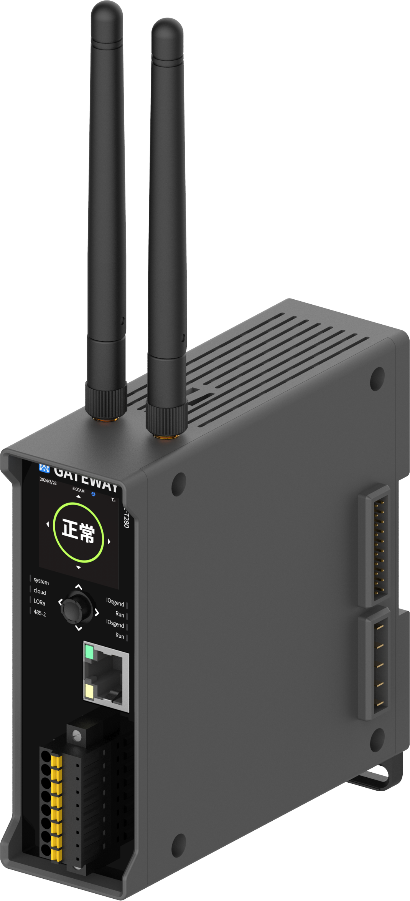

WE-X280 Industrial Edge Computing Gateway
A powerful industrial edge computing gateway supporting LoRa wireless and RS485 wired convergence networks. Connects up to 128 wired/wireless devices, features 4G full Netcom and Ethernet dual-channel communication, edge computing engine, and seamless integration with the WEST-AIOT cloud platform.
For technical support or customized OEM versions, email us from Contact Information. for technical documentation

Key Highlights
Precision monitoring meets rugged industrial design.
Multi-Network Convergence
Supports 4G full Netcom, Ethernet, LoRa (410–490MHz), and RS485 wired networks simultaneously for flexible device connectivity.
Edge Computing Engine
Built-in edge computing capabilities for high-precision digital conversion, exception cleaning, protocol unification, and business logic calculation at the edge.
Massive Device Access
One gateway connects up to 128 wired/wireless sensing devices, with expandable support for up to 16 I/O node modules.
Dual-Channel Communication
4G full Netcom (LTE FDD/TDD) and Ethernet (RJ45, 10/100M) dual-channel encrypted transmission to the cloud platform.
Cloud Platform Integration
Seamlessly connects to WEST-AIOT device management platform and third-party platforms via MQTT + custom JSON protocol.
Industrial Reliability
Rail-mounted design, ABS/PC housing, wide temperature range (-20°C to +70°C), CE certified for demanding industrial environments.
Product Gallery
Detailed views (Scroll thumbnails to browse).
Specifications
Technical parameters based on the product manual.
| Model | WE-X280 Industrial Edge Computing Gateway |
|---|---|
| 4G Communication | LTE FDD B1/3/5/8; TDD B34/38/39/40/41; SMA female antenna |
| LoRa Communication | 410.125–490.125MHz; 22dBm Tx; −147dBm Rx sensitivity; 5km LOS range |
| Ethernet | 1× RJ45, 10M/100M adaptive |
| RS485 | 2 ports, Modbus-RTU |
| I/O Expansion | 1× expansion interface, supports up to 16 I/O modules |
| BLE Interface | Local configuration via Bluetooth |
| TF Card Slot | External slot, supports disconnect-and-continue transmission |
| Max Device Access | 128 wired/wireless sensing devices |
| Cloud Protocol | MQTT + custom JSON, WEST-AIOT platform compatible |
| Display | 1.3-inch LCD, multi-function buttons, LED indicators |
| Power Supply | 24V DC |
| Operating Temp | −20°C to +70°C |
| Storage Temp | −40°C to +80°C |
| Protection Rating | IP20; ESD 4KV contact / 8KV non-contact |
| Certification | CE |
| Dimensions | 38 × 110 × 117 mm (W×H×D) |
| Weight | 205g |
| Housing Material | ABS/PC |
| Mounting | 35mm DIN rail |
Typical Applications
Optimized for diverse agricultural and environmental monitoring needs.
Building Energy Management
Monitor and optimize energy consumption in office buildings, commercial real estate, and factories. Connect various sensors via LoRa and RS485 for comprehensive energy monitoring and emission reduction.
Industrial IoT (IIoT)
Bridge distributed field devices to cloud SCADA and MQTT/HTTP endpoints. The edge computing engine processes data locally before secure uplink to the WEST-AIOT platform.
Standard Package
Standard configuration for the product.
| # | Item | Qty |
|---|---|---|
| 1 | Industrial edge computing gateway (WE-X280) | 1 |
| 2 | 24V DC power supply | 1 |
| 3 | 4G antenna | 1 |
| 4 | LoRa antenna | 1 |
| 5 | Ethernet cable | 1 |
| 6 | User manual & certificate of conformity | 1 |
Downloads
Access technical documentation for the product.
Contact Information
For quotations, lead times, and technical support.
Room 1502, 15th Floor, Building 20, No. 487 Tianlin RoadShanghai, 200233, China
+86-021-33675566
ftd_sales@west-hn.com
Monday to Friday, 9:00 - 18:00